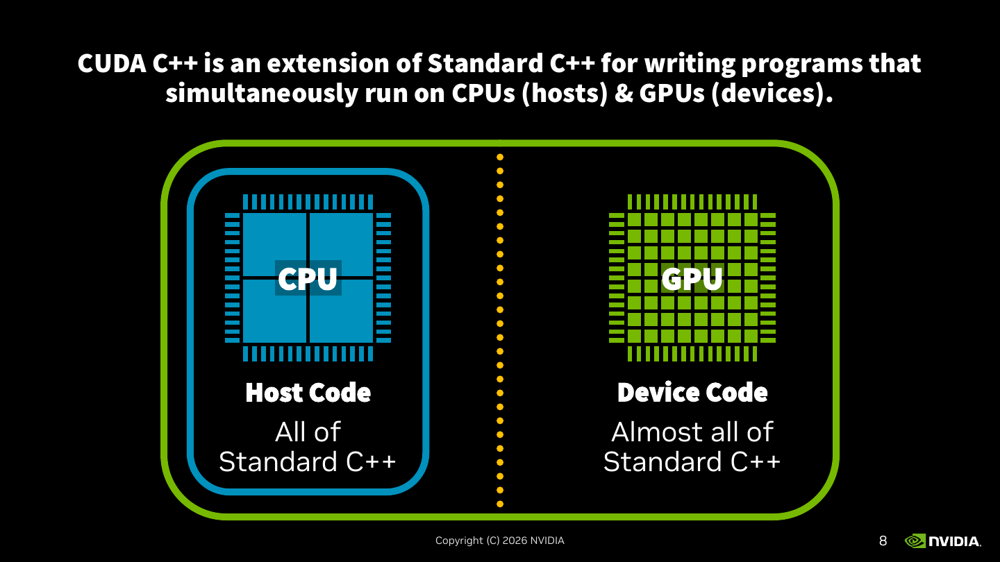
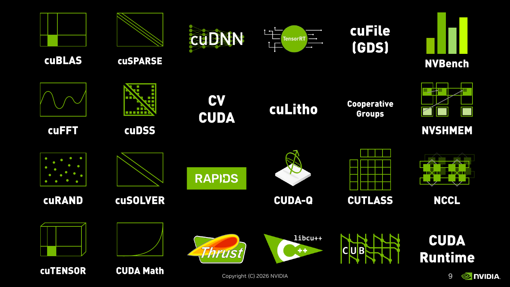
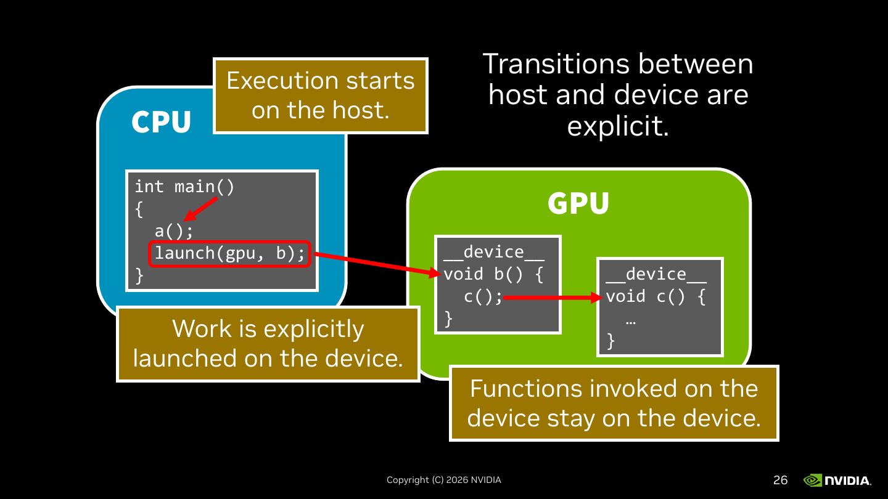

主题：CUDA C++ 入门 —— GPU 架构、Host/Device 模型、加速库全景、热传导例子
Lecture 9 是 NVIDIA Bryce Adelstein Lelbach 的客座讲座《The CUDA C++ Developer's Toolbox》（共 164 页 slides，本笔记按主题合并）。Slide 1 是讲者封面（行政页），跳过。技术内容从 slide 2 起。前 25 页围绕一个核心问题展开：为什么需要 GPU？怎样在 C++ 里写既能跑在 CPU 又能跑在 GPU 的代码？笔记按主题把连续同主题的 slides 合并成一节，便于复习时按概念维度而不是 slide 维度回顾。
Slide 2 用两张芯片俯视图说明结构差异。CPU 芯片画成 4 个大方块——代表少数几个复杂的强核（每核有大量 cache、乱序执行、分支预测、多发射等机制）。GPU 芯片画成密密麻麻的 64 个小方块——代表非常多的简单核心，每核功能弱、cache 小，但数量多。
这个对比定下了基调：CPU 优化"单线程做事快"，GPU 优化"同时做很多件相同的事"。所以同样的代码，串行/分支密集 → CPU 占优；大批量相同算术 → GPU 占优。
Slide 3 加上 CPU 的内存子系统：访问延迟 ≈ 100 ns，带宽 ≈ 100 GB/s（slide 强调"数字是举例用的，不是精确数值"）。延迟 = 一次取一个字节要等多久；带宽 = 单位时间最多搬多少字节。两者不是同一回事——延迟高但带宽大的系统可以靠"流水"撑住吞吐，但单次随机访问还是慢。
Slide 4 把 GPU 的内存子系统并排放上：GPU 延迟 ≈ 500 ns（更高），GPU 带宽 ≈ 1000 GB/s（更高）。这是 GPU 的典型权衡：用 HBM/GDDR 做并行总线，单次访问比 CPU 慢，但总搬运速度大约 10×。GPU 通过让大量线程同时发射访存请求来"摊平"延迟——任一线程在等内存时其他线程接着算，硬件根本不在乎单线程的等待。
Slide 5 把这层意思说出来——"You need a sufficient workload to benefit from GPUs." 意思是：如果只算一点点，把数据从 CPU 内存搬到 GPU 内存的开销 + GPU 的高启动延迟，可能比 CPU 直接算还慢。
下面两条 rule of thumb 给出了"多少才算够"的粗略标准：
这就是后面所有内容的前提：CUDA 的存在意义就是让你能高效地把"够大的活"喂给 GPU 这种宽吞吐设备。
这两页是讲座的 section divider——Slide 6 提出问题"如何用 C++ 编 GPU"，Slide 7 给出 NVIDIA 的官方答案：CUDA C++ + Accelerated Libraries。两个并列入口意味着你不必从零写 kernel：
两条路不是互斥的。实际项目里通常 大部分计算用库（性能稳定、维护成本低），关键的几个热点 kernel 自己写 CUDA C++（针对自己的访存模式调优）。

Slide 上一句话定义："CUDA C++ is an extension of Standard C++ for writing programs that simultaneously run on CPUs (hosts) & GPUs (devices)." 注意"simultaneously"——同一个源文件里同时包含 CPU 部分和 GPU 部分，编译产物同时跑在两边。这和 OpenCL"主机端 C++ + 设备端单独的字符串 kernel 源码"是不同的体验：CUDA 让你把两边的代码写在一起。
下面这两个术语贯穿后面所有 slides：
中间那条点状黄线表示"Host 与 Device 是两个独立执行域，但同属一个程序"——这层分界后面会反复出现（编译流程、函数注解、执行流转）。

Slide 列出的 24 个组件按功能可以粗分成几类，复习时知道"这个领域有库"就够了，具体 API 用到再查：
实际工程的次序通常是：先看有没有现成的库 → 用库；性能不够再考虑自己写 kernel。这页的目的是让你知道"该先去哪儿找"。
Slide 10 给出物理直觉：3 只一样的杯子，热成像显示当前温度分别是 42°C、24°C、50°C，环境温度 20°C。每过一段时间，每只杯子的温度都会往环境温度靠拢一点。
Slide 11 把这个物理过程数学化：
Next Temp = Current Temp + Heat Transfer Coefficient × (Ambient Temp − Current Temp)这是牛顿冷却定律的离散化：温差越大冷却越快，温差为 0 时停下。Slide 给的参数：Ambient Temp = 20°C，Heat Transfer Coefficient k = 0.5。
套数验证：
关键性质：每只杯子的更新只依赖自己当前的温度，杯子之间没有相互影响——这是典型的"embarrassingly parallel"（尴尬并行）模式。所有杯子可以完全并行更新，没有数据依赖、没有通信、没有同步。这正是 GPU 最舒服的工作负载形状，所以讲座挑这个例子来从串行 → CUDA 并行一步步演化。
Next = Cur + k(Ambient − Cur) 冷却。每个元素更新独立，是 GPU 最理想的"对每个元素做相同运算"的负载形状。
从 slide 12 到 15 一行一行加，最终代码大致是：
int steps = 3;
float k = 0.5;
float ambient_temp = 20;
std::vector<float> cups{42, 24, 50};
auto op = [=] (float t) {
float diff = ambient_temp - t;
return t + k * diff;
};
for (int step : std::views::iota(0, steps)) {
std::println("{} {}", step, cups);
std::transform(cups.begin(), cups.end(),
cups.begin(), op);
}std::vector<float> cups{42, 24, 50}：N 只杯子的当前温度，存成普通 STL vector。auto op = [=] (float t) { ... }：一个 lambda，输入当前温度 t，输出下一时刻温度。[=] 表示按值捕获外部变量 k、ambient_temp——所以 lambda 自带这两个常数，不用作参数传。for (int step : std::views::iota(0, steps))：C++20 ranges 风格的循环，等价于 for (int step = 0; step < steps; ++step)。iota(0, steps) 生成 [0, steps) 这段整数视图。std::println("{} {}", step, cups)：C++23 的格式化打印，直接打 step 和整个 vector（vector 的格式化也是 C++23 才进的）。std::transform(first, last, result, op)：STL 算法，对 [first, last) 中每个元素调 op，把结果写到 result 起始的位置。这里源和目标都是 cups.begin()——原地更新。右上写着 std::transform(first, last, result, op)，下面画了三条对应：op(42) → 31、op(24) → 22、op(50) → 35。first 指向 cups 第一个元素，last 指向末尾哨兵，result 指向写出位置。这就是把 op 应用到每个元素的过程——语义上每个 op 之间互不依赖，可以并行做，但 std::transform 默认是串行实现。
因为后面要把它"GPU 化"——只要把 std::transform 换成它的并行版本（std::transform(std::execution::par_unseq, ...) 或 Thrust 的 thrust::transform），代码主体不变就能跑到多核或 GPU 上。用 STL 算法表达"对每个元素做同样的事"，比手写 for 循环更容易自动并行化，这是讲座后面那条主线。
std::transform(cups.begin(), cups.end(), cups.begin(), op) —— 把"对每个元素做相同运算"用 STL 算法表达出来，原地更新。后面只要换成并行版的 transform 就能跑到 GPU。
两张图都从同一个 C++ 表达式 t + k * diff 出发，看编译器把它翻译成什么样的机器指令。
命令：g++ main.cpp -o a.out。产物只有一个——"Host code executable by CPU"。slide 上画的指令叫 vmla.f32（vector multiply-add，单精度 SIMD 乘加），这是 CPU 的 SIMD 指令。整个程序只跑在 CPU 上，GPU 完全没参与。
命令：nvcc main.cpp -o a.out。同样一份源码，nvcc 同时产生两份机器码：
vmla.f32）。这部分是给 CPU 跑的逻辑（main、内存分配、kernel 启动调用等）。fma.rn.f32，是 NVIDIA PTX 里的 fused-multiply-add，rn 是 round-to-nearest-even 舍入模式）。这部分是给 GPU 跑的 kernel 逻辑。两份产物被打包进同一个可执行文件 a.out。运行时，CPU 跑 host 部分；当 host 调到 launch GPU kernel 的位置，CUDA runtime 把对应的 device 代码送到 GPU 上跑。
nvcc 产生的 a.out 里同时含有多种架构的代码——可能有 PTX（中间表示，目标 GPU 架构上现场 JIT），也可能有 SASS（特定架构如 sm_80、sm_90 的最终机器码）。这让同一个二进制可以跑在多代 GPU 上，运行时挑合适的版本。后面 slides 会进一步展开。
__host__ / __device__：标记函数能在哪边跑Slide 18 是上一节的串行代码（无任何注解）。这样 nvcc 默认把所有函数当 host 函数，GPU 端就没法调 op——所以即使把 transform 换成并行版本，编译也会报错说"在 device 代码里调用了一个只能在 host 上跑的函数"。
__host__ / __device__ 注解告诉 nvcc"这函数能在哪跑"Slide 19 给 lambda 加上 __host__ __device__：
auto op = [=] __host__ __device__ (float t) { ... };这告诉 nvcc：把这个 lambda 同时编译成 CPU 版本和 GPU 版本，两边都能调它。
| 注解 | 函数声明示例 | 含义（slide 原文） |
|---|---|---|
__host__（或不加注解） |
void a(); 或 __host__ void b(); |
Only executable by the CPU. Includes all unannotated functions. —— 只能 CPU 跑。所有没加注解的函数都默认是 __host__。 |
__device__ |
__device__ void c(); |
Only executable by the GPU. —— 只能 GPU 跑。从 host 代码里调 c() 编译会报错。 |
__host__ __device__ |
__host__ __device__ void d(); |
Executable by CPU and GPU. —— 两边都能跑。nvcc 会把 d 编译两份。 |
__device__。__host__ __device__，让一份源码服务两边。注意：这里还没有提到 __global__——那是用来标记"从 host 启动、在 device 上执行的入口 kernel"的注解，是另一个东西。__host__/__device__ 只是说"这个函数本身能在哪边跑"，不涉及"它是不是 kernel 入口"。
__host__ = 只 CPU（默认），__device__ = 只 GPU，__host__ __device__ = 两边都编一份。给跨端复用的 lambda/工具函数加 __host__ __device__。
程序入口 main 跑在 CPU 上。slide 画的 main 里只调了 a()——一个普通的 host 函数。这是任何 CUDA 程序的起点：Execution starts on the host。GPU 此时是空闲的，等着被启动。
slide 加了一行 launch(gpu, b);——这是讲座的"伪 API"，对应实际 CUDA 里的 <<<...>>> kernel 启动语法（或 cudaLaunchKernel）。它的语义：
b() 的代码送到 GPU 上调度执行；b() 又能调 c()（也是 __device__），但调用图整个发生在 device 一侧。关键点：Work is explicitly launched on the device——CPU 不会"自动发现"哪段代码该跑 GPU。所有 GPU 工作都得程序员主动 launch。这跟 OpenMP 的 #pragma omp parallel 那种"加一行代码就并行"的模型不一样：CUDA 里 host/device 之间的边界是显式的语法。
右上多出一句 "Transitions between host and device are explicit."——这是整页的精神总结。所有"从 CPU 进 GPU"或"从 GPU 回 CPU"的动作都需要程序员显式表达：
launch(gpu, b) / kernel<<<grid, block>>>()。cudaMemcpy 或 unified memory 的 access（unified memory 看似自动，但底层 page fault 也是显式硬件机制）。cudaDeviceSynchronize / stream 上的 event。"显式"在 CUDA 里是优点——程序员能精确控制何时数据搬、何时 kernel 启、何时同步，因此能榨出性能。代价是写起来比"全自动"模型更啰嗦。

Slide 26 把前面三页拼到一起：CPU 框里 main 调 a()（host）；同一个 main 里再 launch(gpu, b)，箭头跨过 host/device 边界，跑到 GPU 框里的 __device__ void b() { c(); }；b 再调 __device__ void c()，箭头停留在 GPU 框内。
右下黄框："Functions invoked on the device stay on the device."—— 一旦执行进了 GPU，调用图就一直留在 GPU 上，不会自动跳回 CPU 再回来。也就是说，__device__ 函数里再调 __device__ / __host__ __device__ 函数都没事，但调一个纯 __host__ 函数就编译报错——因为在 GPU 上没有那段代码可执行，跨回去也得程序员显式 launch（实际语义其实是从 CPU 主动发起的另一次 kernel launch，而不是"调一个函数"）。
合在一起就是 host↔device 模型的三条铁律：
这三条决定了 CUDA 代码长什么样：CPU 是"调度者"，写"在哪起、什么时候发活、什么时候等回结果"；GPU 是"工人队伍"，一旦发活就在自己的世界里跑完整段调用图。
__host__ __device__ + thrust::transform + universal_vector这三页延续 slide 12–15 那段冷却代码，每翻一页只改一行，最终把它从纯 CPU 串行变成跑在 GPU 上的并行版本。改动的关键是看每一步还差什么、补哪一块。
__host__ __device__auto op = [=] __host__ __device__ (float t) { ... };对应 slide 18–22 学到的注解规则。op 现在两边都能调，是后续把它扔给 GPU 的前提。光加注解还没真"上 GPU"——因为 std::transform 仍是串行实现，CPU 调它就在 CPU 上跑。
std::transform 换成 thrust::transform(thrust::cuda::par, ...)thrust::transform(thrust::cuda::par,
cups.begin(), cups.end(),
cups.begin(), op);Thrust 是 NVIDIA 提供的"GPU 上的 STL"，API 形状跟 STL 算法一一对应。第一个参数是执行策略 (execution policy)：
thrust::cuda::par：在 CUDA 设备上并行执行。thrust::host（CPU 串行/并行）、thrust::seq（强制串行）。这一行改完，transform 本身的工作已经在 GPU 上做了——但 cups 还是个 std::vector，它的内存只在 host 端可见。Thrust 在内部会做一次隐式拷贝（host→device 算→device→host），代价不小，所以下一步要把容器也换掉。
std::vector 换成 thrust::universal_vectorthrust::universal_vector<float> cups{42, 24, 50};universal_vector 用 CUDA 的 unified / managed memory 分配存储——同一块内存对 CPU 和 GPU 都可见，运行时按 page fault 在两边迁移。std::println 在 CPU 侧打印没问题，thrust::transform 在 GPU 侧计算也直接读到同一块数据，省掉了显式 cudaMemcpy。
对比串行版和最终 GPU 版，只有 3 处差异——加注解、换算法命名空间、换容器类型。"对每个元素做相同运算"这个抽象层稳稳地把串行实现和 GPU 并行实现连了起来。这就是 Thrust 的设计动机：用 STL 风格表达并行算法，让你像换执行策略一样换硬件后端，不需要重写算法逻辑。
__host__ __device__ ② 算法换 thrust::transform(thrust::cuda::par, ...) ③ 容器换 thrust::universal_vector。代码主体保持 STL 风格不动。
Slide 30 给出 Thrust 的定位："The C++ Parallel Algorithms Library"，主页 nvidia.github.io/cccl/thrust。它属于 CCCL（CUDA C++ Core Libraries）的一部分，提供 STL 风格的并行算法 + 容器 + 迭代器。从 slide 31 起，讲座一页加一栏地把它的"产品目录"展开。
thrust::transform_reduce、thrust::inclusive_scan、thrust::sort、thrust::copy。这些就是日常用得最多的并行原语。thrust::reduce_by_key（按 key 分组归约）、thrust::sort_by_key（带 payload 的排序，用 keys 排）、thrust::tabulate（用函数生成序列）、thrust::gather（按索引列表收集元素）。thrust::device_vector（只在 GPU 内存）、thrust::host_vector（只在 CPU 内存）、thrust::universal_vector（unified memory，两边可见）、thrust::allocate_unique（带 deleter 的 device 端 unique_ptr）。thrust::counting_iterator（生成连续整数）、thrust::constant_iterator（永远返回同一个值）、thrust::transform_iterator（对底层 iterator 套一个变换函数，惰性求值）、thrust::zip_iterator（把多个序列"拉链"成 tuple 序列）。这些是 Thrust 的"幕后英雄"——后面 slides 会重点展开，因为它们能让算法链条免去中间临时数组。Slide 34 用 std::vector<T> h0(1 << 30)（10 亿元素）和 h0 = h1，配文字说：std::vector 的内容只在 host code 里可访问；构造和赋值是串行的。也就是说初始化/拷贝这些"看似无关计算"的步骤，在 std::vector 上是 CPU 单线程逐个走的。
Slide 35 把同样的代码换成 thrust::universal_vector：universal_vector 的内容在 host 和 device 上都能访问；构造和赋值是并行的。所以即便你只是初始化一个 1G 的 vector，universal_vector 也是用 GPU 的所有线程一起填进去的——这种"基础操作并行化"是 Thrust 容器的隐藏价值。
Thrust 的 catalog 可以背成"4 类东西，每类 4 个代表"：算法（standard / extended）、容器、迭代器。复习时先记住有这四个抽屉，里面具体函数名用到再查文档。
for_each_n + counting / constant iterator：用迭代器当输入流thrust::for_each_n(policy, first, n, op) 的语义三页都用同一个函数：从 first 起取 n 个元素，对每个元素并行调一次 op。和 std::for_each 同名，不返回结果，靠副作用做事（计数、写另一个数组、修改原元素等）。op 是 __host__ __device__ lambda。
thrust::universal_vector X(N);
thrust::for_each_n(thrust::cuda::par, X.begin(), N,
[...] __host__ __device__ (auto& obj) { ... });下面那张 Input/Operations 图：上排是 X[0], X[1], X[2], ... 的格子，下排每格有一个 λ。意思是 每个元素都被并行喂给 op 一次，op 拿到引用 obj（注意是 auto&，可改写）。这是最直观的用法。
auto i = thrust::make_counting_iterator(0);
thrust::for_each_n(thrust::cuda::par, i, N,
[...] __host__ __device__ (auto idx) { ... });不存在真实数组——counting_iterator(0) 在被解引用时返回 0、1、2、3、...。下面图里上排格子是 0, 1, 2, ...。所以 op 拿到的不是元素，而是"我是第几个"的索引。这给你回到了"传统并行 for-loop"的写法：
for (int idx in 并行 [0, N))
op(idx);不需要先 allocate 一个 {0,1,...,N-1} 的数组——counting_iterator 是惰性的，整数是按需生成的。这一招在需要 grid index 的 kernel（比如初始化、生成坐标网格）里非常常见。
auto i = thrust::make_constant_iterator(42);
thrust::for_each_n(thrust::cuda::par, i, N,
[...] __host__ __device__ (auto idx) { ... });下面图里上排格子全是 42, 42, 42, ...。constant_iterator(42) 怎么解引用都是 42，可以让 N 个并行任务都拿到同一个常量值——比如把"广播一个标量"和别的序列组合用。
这两个 iterator 的共同点是"无内存分配的虚拟序列"。在 GPU 上分配 1 亿元素的数组不便宜（slide 42 后面会强调"materialize O(N) 临时数组在 device memory 是浪费"），所以 Thrust 鼓励你用 iterator 表达"概念上是这样的输入"，让算法在跑的时候按需生成值，不真的占内存。这条思路是后面 transform_iterator / zip_iterator 的基础。
counting_iterator 生成 0,1,2,...，constant_iterator 永远返回同一个值。配合 for_each_n 可以零成本表达"做 N 次"或"广播标量"，不需要分配中间数组。
transform_iterator 融合掉中间数组这是个常见 pattern——对每个元素先做点变换（f），再把结果合起来（用 g 归约成一个标量）。比如算 sum(f(X[i]))。Slide 40 给出最朴素的写法：
thrust::universal_vector X(N), tmp(N);
thrust::transform(thrust::cuda::par,
X.begin(), X.end(), tmp.begin(), f);
auto r = thrust::reduce(thrust::cuda::par,
tmp.begin(), tmp.end(), T{}, g);下面图里 X 走过 4 个 f，得到一行中间结果，再走两层 g 归约成一个值。从结果上看是对的，但实现上有两个问题——slide 41 和 42 分别揭示。
红色横线把 f 的输出和 g 的输入隔开。意思是：整个 transform 必须先全部跑完，reduce 才能开始。右侧紫色框画了多个"Blocked"块，配红色波浪箭头——表示 reduce 的线程都在等 transform 写完那块 tmp 内存才能往下读。两个 kernel 之间有一次硬同步（kernel 启动 + global memory 写入 + 下一次 kernel 读取）。即使 GPU 计算单元闲着，也得等。
右上加了一行："Materializes O(N) temporary storage in precious device memory." —— tmp 是 N 个元素的真实数组，分配在 GPU 的 HBM 上。GPU 的 device memory 又贵又少，把它拿去存"只用一次就被求和掉的中间值"是个明显浪费。N 大的时候，可能根本放不下。
transform_iterator 融合两步thrust::universal_vector X(N);
auto tmp = thrust::make_transform_iterator(X.begin(), f);
auto r = thrust::reduce(thrust::cuda::par,
tmp, tmp + N, T{}, g);关键变化：tmp 不再是个 vector，而是一个惰性 iterator。thrust::make_transform_iterator(it, f) 包了底层 iterator it 一层，每次解引用 *tmp 时才调 f(*it)。
从 reduce 的角度看，它根本不知道这些值是"算出来的"还是"读出来的"——它就照常 *it 拿值，然后两两 g 合并。但 f 的执行被推到 reduce 的 leaf 那一层，上一行画的图就变成了：每个 f 的箭头不再写到中间一行，而是直接进 g 的归约树。
好处有两个：
f 和 g 都在同一个 reduce kernel 里执行，每个线程在自己的寄存器/共享内存里就完成 "load → f → 局部归约"，吞吐显著提高。这种把"上一步的输出"换成"按需生成的 iterator"叫做 kernel fusion（核融合），是 GPU 编程里的基本性能优化手段。Thrust 的 iterator 就是为了让 fusion 在 STL 风格代码里也表达得出来。
thrust::make_transform_iterator 把 transform 变成惰性，融进 reduce 内部，tmp 直接消失——这是 GPU 编程最常用的 fusion 技巧。
zip_iterator：把多个序列"拉链"成 tuple 流STL/Thrust 的算法签名一般是 algo(first, last, op)——只有一条输入序列。但实际算的东西经常涉及"两条流的对应位置"：X[i] + Y[i]、X[i+1] − X[i]、坐标对 (x[i], y[i]) 等。zip_iterator 就是把多条 iterator 打包成一条"tuple iterator"。
thrust::universal_vector X(N), Y(N);
auto XY = thrust::make_zip_iterator(
thrust::cuda::par, X.begin(), Y.begin());
thrust::for_each_n(thrust::cuda::par, XY, N, f);解引用 *XY 得到的是 tuple{X[i], Y[i]}。下面图里 Input 那一段画了 X 和 Y 两行格子，对应位置纵向对齐；Operations 那一段画了 f(tuple{X[0], Y[0]})、f(tuple{X[1], Y[1]})、… 也就是 f 拿到的不是单个元素而是 tuple，可以在内部 auto [x, y] = ab; 解结构。
auto adj = thrust::make_zip_iterator(
thrust::cuda::par, X.begin(), X.begin() + 1);
thrust::for_each_n(thrust::cuda::par, adj, N - 1, f);第二个 iterator 比第一个偏移 1，所以 *adj 是 tuple{X[i], X[i+1]}——相邻两个元素一起喂给 f。下面图里 Input 上下两行都是 X 的格子，但下行从 X[1] 起。这是表达"差分 / 相邻关系"的标准技巧，比如 X[i+1] − X[i] 这种。注意长度变成 N − 1，因为最后一个元素没有"下一个"。
这两个 iterator 互补：zip_iterator 把"多路输入"打包成 tuple；transform_iterator 把"输出做点计算"惰性化。组合起来就能写出"任意结构的多输入流水线"，全程不占额外内存（slide 50 是这个组合的实战展示）。
zip_iterator 把多个 iterator 拉链成 tuple iterator，让单输入算法接受多路输入。两种典型用法：① 不同 vector 同位置 → (X[i], Y[i])；② 同一 vector 错位 → (X[i], X[i+1]) 表达相邻关系。
给两条等长序列 A 和 B，算 max_i |A[i] − B[i]|——逐位置算绝对差，再取最大值。这是数值算法里最常见的"误差度量"模式。
Slide 上举了具体数：A = [5,2,9,7]，B = [1,9,6,8]。每位作差得 [4,−7,3,−1]，绝对值 [4,7,3,1]，最大 7。底下还标了符号 "A − B → max(abs)"，把算法步骤可视化清楚。
Slide 47 先把数据放进 universal_vector：
thrust::universal_vector<int> A(...);
thrust::universal_vector<int> B(...);Slide 48 加上 transform 求 diffs：
thrust::universal_vector<int> diffs(A.size());
thrust::transform(thrust::cuda::par,
A.begin(), A.end(), B.begin(), diffs.begin(),
[] __host__ __device__ (int a, int b) {
return abs(a - b);
});这里用了 std::transform 的"二元版本"重载——多一个输入 iterator B.begin()，op 接受两个参数。结果写到 diffs。下面图画了 4 个红格子 5-1, 2-9, 9-6, 7-8。
Slide 49 加上 reduce 求 max：
auto max_diff = thrust::reduce(
thrust::cuda::par,
diffs.begin(), diffs.end(),
0,
cuda::maximum{});初始值 0，归约函数 cuda::maximum{}（取两个里大的那个）。下面图把 4 个红格子两两归约成 2 个绿圆，再合成 1 个绿圆——典型的 reduce 树。
这一版正确但有 slide 40–42 提的两个问题：分配了 N 个元素的 diffs（O(N) 设备内存），且 transform 和 reduce 是两个 kernel，中间要硬同步。
把 slide 43（transform_iterator 融进 reduce）和 slide 44（zip_iterator 拼多路输入）的两招合起来：
auto AB = thrust::make_zip_iterator(
A.begin(), B.begin());
auto diffs = thrust::make_transform_iterator(
AB.begin(),
[] __host__ __device__
(cuda::std::tuple<int, int> ab) {
auto [a, b] = ab;
return abs(a - b);
});
auto max_diff = thrust::reduce(
thrust::cuda::par,
diffs, diffs + A.size(),
0,
cuda::maximum{});逐层看：
AB 是 zip iterator，解引用得 tuple{A[i], B[i]}。diffs 是 transform iterator，包在 AB 上，解引用时拿出 tuple、解结构成 (a, b)，返回 abs(a − b)。thrust::reduce 把这条惰性 iterator 当输入，cuda::maximum{} 归约。右侧图里把每个 {A[i], B[i]} 红格子直接喂给灰色的 − 八边形（绝对差），再进绿圆 reduce 树。整个流程不存任何中间数组，所有计算融在一个 reduce kernel 里：每个 GPU 线程读一对 (a,b)、算 abs(a−b)、参与局部 max 归约，结果只有一个标量。
同样的逻辑，朴素版分配 O(N) 的 diffs、跑两个 kernel；融合版零额外内存、一个 kernel 跑完。性能差距随 N 增大越来越明显——这就是为什么 Thrust 这么重视 iterator：用 iterator 表达数据流，让算法引擎自动把链路融合到尽可能少的 kernel 里。
transform 写中间数组 + reduce；融合版 = zip_iterator(A,B) → transform_iterator(abs(a−b)) → reduce(maximum)。融合版零中间数组、一次 kernel，是 Thrust 风格 GPU 代码的代表。
transform_reduce 一步到位 + 引出 cuda::std::* / cuda::*这两页是 slide 50 的复用，把"zip_iterator + transform_iterator + reduce"那一整套代码再展示一次，作为 slide 53 改写的起点。
thrust::transform_reduce 把"transform_iterator + reduce"合并成一个 API把 thrust::make_transform_iterator(AB, λ) 那一段去掉，把 lambda 直接传给 thrust::transform_reduce：
auto AB = thrust::make_zip_iterator(A.begin(), B.begin());
auto max_diff = thrust::transform_reduce(
thrust::cuda::par,
AB, AB + A.size(),
[] __host__ __device__
(cuda::std::tuple<int, int> ab) {
auto [a, b] = ab;
return abs(a - b);
},
0,
cuda::maximum{});transform_reduce(policy, first, last, transform_op, init, reduce_op) 是 Thrust 提供的融合算法：内部就是"对每个元素先 apply transform_op，再用 reduce_op 归约"。它和"transform_iterator + reduce"在效果与性能上等价，但代码读起来更清晰——一行就能看到"先变换、再归约"两个意图，不必去拼 iterator。
建议：日常代码优先用 transform_reduce / transform_inclusive_scan 这种"已经融合好"的 API；只有当你需要把更多步骤拼到一起（比如 zip 后再 transform 后再 reduce）时才手写 iterator 链。
cuda::std::tuple 和 cuda::maximum{} 不是 std::*——它们来自 libcu++这页只把代码里两个出现的"cuda::std::" 和 "cuda::" 命名空间高亮，引导你注意：
cuda::std::tuple<int, int>：和 std::tuple 接口完全一致，但在 device 上也能用。cuda::maximum{}：和 std::ranges::max/函数对象类似的"二元取大"函数对象，但属于 cuda 命名空间下专为 device/host 双端用的实现。这两个名字都是 libcu++ 这个库提供的——下一节（slide 55–59）会专门展开 libcu++ 的命名空间组织。这里只是为了引出"为什么不能直接用 std::tuple 和 std::ranges::max？"这个问题：因为 host 标准库不保证 device 端可用，所以 NVIDIA 提供了一份"双端可用的 std 子集 + CUDA 扩展"，就是 libcu++。
thrust::transform_reduce(policy, first, last, transform_op, init, reduce_op) 把"transform iterator + reduce"压成一个 API，可读性更好。代码里的 cuda::std::tuple、cuda::maximum 不是标准库——属于 libcu++（下一节展开），目的是让 host/device 双端都能用同一个名字。
Slide 55 给定位："The CUDA C++ Foundational Library"，主页 nvidia.github.io/cccl/libcudacxx。它和 Thrust 一样是 CCCL 的一部分，但角色不同——Thrust 提供"算法+容器"（高层），libcu++ 提供"类型+原语"（底层），相当于 GPU 上的 std 库。
| 来源 | 头文件 | 命名空间 | 能在哪跑 | 说明 |
|---|---|---|---|---|
| Host 编译器的标准库（GCC/LLVM/MSVC 等） | #include <...> |
std:: |
仅 host | 完整、严格符合 Standard C++。Slide 56 的关键点：标准库在 device 上没保证，所以 std::vector、std::tuple 这种放进 __device__ 函数里可能编译不过或运行错误。 |
| libcu++ 的"std 镜像" | #include <cuda/std/...> |
cuda::std:: |
host + device | 把 Standard C++ 库的一个子集移植到 device 端，接口和 std 一一对应。Slide 57 强调 "Subset, strictly conforming"——能用的部分跟 std:: 行为一致，可以"无脑替换"。例：cuda::std::tuple、cuda::std::atomic、cuda::std::array。 |
| libcu++ 的 CUDA 扩展 | #include <cuda/...> |
cuda:: |
host 和/或 device | 专为 CUDA 设计的 API，在标准库基础上加 GPU 才有的语义（thread scope、memory order、warp 协作等）。Slide 58 描述："Modern C++ API for CUDA & Standard C++ extensions." 例：cuda::atomic_ref（带 thread scope）、cuda::pipeline、cuda::maximum。 |
| libcu++ 实验区 | #include <cuda/experimental/...> |
cuda::experimental::（别名 cudax::） |
视具体 API | Beta features——还在演化、API 可能变。Slide 59 标识为试用区，新设计先在这里"放风"，稳定后再搬进 cuda::。 |
写代码时按"想在哪边跑 + 接口是不是和 std 等价"决定用哪个：
std::（最完整）。cuda::std::，行为一致。cuda::。cuda::experimental:: / cudax::，但要做好将来 API 改动的心理准备。之前 transform_reduce 例子里的 cuda::std::tuple<int, int>（host+device 都能用的 std 镜像）和 cuda::maximum{}（CUDA 扩展函数对象）——现在能精确归类：第一个属于 cuda::std::，第二个属于 cuda::。
reduce_by_key 实战：矩阵每行求和Thrust 全景图再次出现，但这次thrust::reduce_by_key那一行被高亮。它在 STL 里没有对应物——属于"Extended Algorithms"，是 GPU 编程里非常常用的"按组归约"原语。下面一整套 slides 用一个具体例子把它讲透。
定义：
int nx, ny;
thrust::universal_vector<float> M(nx * ny);这是把一个 nx × ny 的二维矩阵按 row-major 拍平存进一维 vector——内存里依次是第 0 行的 ny 个元素、第 1 行的 ny 个元素…。右边图画了 8 行 4 列的具体数据 M（粉色格），目标是计算右边那条红色"行和向量"（每个红格 = 该行 4 个元素之和）。
右下黄框："Each set of consecutive keys that compare equal defines a group." 这是 reduce_by_key 的关键定义：一段相邻的、键值相等的元素就是一组。reduce_by_key 会把每组的 value 用归约函数合成一个值。
注意"consecutive（相邻）"——它不会去全局找等键的元素再合，所以输入必须按 key 排好。
右图的粉色矩阵换成绿色"keys 矩阵"：第 0 行全是 0，第 1 行全是 1，…，第 7 行全是 7。也就是说，把每个矩阵元素的行号作为它的 key，那相邻同 key 的连续 ny 个值就构成一组——正好是同一行。这样 reduce_by_key 就能为每行算一个和，输出 nx 个值。
auto row_ids_begin = thrust::make_transform_iterator(
thrust::make_counting_iterator(0),
[=] __host__ __device__ (int x) { return x / ny; });
auto row_ids_end = row_ids_begin + nx * ny;组合用了两个迭代器：
counting_iterator(0) 提供 0, 1, 2, ..., nx*ny − 1 的虚拟整数流。transform_iterator 在解引用时算 x / ny——第 0..ny−1 个返回 0，第 ny..2*ny−1 个返回 1，… 正好就是行号。这就是 slide 63 那张"keys 矩阵"——但它不真的占内存。如果矩阵很大，分配一个 nx*ny 的 keys 数组又是一笔 O(N) 浪费；用迭代器按需生成，零开销表达"每个位置的行号"。这正是 slide 37–39 学的"虚拟序列"思想的一次实战。
thrust::universal_vector<float> sums(nx);因为有 nx 行，输出 nx 个数。右图把"行和列"画成红色 1×nx，提示 reduce_by_key 的产出形状。
thrust::reduce_by_key，参数一段一段拼Slide 66 把函数名引出，参数留 …。Slide 67 标记第一段参数注释 "// Keys input."，slide 68 把 keys 区间 + values 起点填上：
thrust::reduce_by_key(thrust::cuda::par,
row_ids_begin, row_ids_end, // Keys input
M.begin(), // Values input
...);黄框："The underlying algorithm is applied to the values in each group." ——也就是说，对每段相邻同 key 的 values，用归约函数（默认是加法 plus<>，可自定义）合成一个标量。组的判定靠 keys，归约靠 values。
thrust::reduce_by_key(thrust::cuda::par,
row_ids_begin, row_ids_end, // Keys input
M.begin(), // Values input
/* keys output */, // 每组的代表 key
/* values output */, ...); // 每组归约结果（行和）右图新增一列绿色——keys output：每组只输出一个代表 key（行号 0,1,…,nx−1），所以也是 nx 个。要是只关心行和、不在乎行号，可以把 keys output 写成 thrust::make_discard_iterator() 把它丢掉。
x / ny 当行号，零内存开销。reduce_by_key 把相邻同行号的 values 加起来。整体就是一个 GPU kernel 跑完——没有显式的双重循环、没有手写并行归约、不需要 atomic。这是 Thrust + libcu++ 风格的典型"声明式"代码：把数据形状（"按行分组"）用迭代器表达出来，让算法引擎完成具体并行调度。
thrust::reduce_by_key 把"相邻同 key 的 values"作为一组归约。矩阵行求和的 idiom：用 counting_iterator + transform_iterator(x / ny) 惰性生成行号当 keys，把拍平的矩阵 M 作为 values，调一次 reduce_by_key 就拿到所有行和。键不用真的分配一个数组——这是迭代器在大规模问题里省内存 + 省 kernel 的代表用法。
reduce_by_key 收尾：keys output 用 discard_iterator 丢掉 + by-key 算法家族右下黄框："The first key in each group is copied to the key output range." ——reduce_by_key 把每组的第一个 key 复制到 keys 输出区间。所以右图绿色 keys output 列就是 0,1,2,3,4,5,6,7（每行的代表 key）。
thrust::make_discard_iterator()多数情况下我们只关心行和，不关心"每组的代表 key"。Thrust 提供 make_discard_iterator()：写入它的所有数据都被丢弃，不真的存任何东西。代码改成：
thrust::reduce_by_key(thrust::cuda::par,
row_ids_begin, row_ids_end,
M.begin(),
thrust::make_discard_iterator(), // keys output 不要
...);右图绿色 keys 列变成"叉叉"——表示这些位置没有真实存储。这是又一次"用迭代器表达 0 内存语义"——和 counting/constant/transform iterator 同一思路。
Slide 73 加上 // Values output. 注释，slide 74 callout："The algorithm result for each group is written to the values output."——每组归约结果写到 values output。右图把红色 values output 列填上具体数：54, 89, 25, 38, 68, 75, 80, 40。逐行验证：第 0 行 15+6+18+15 = 54 ✓，第 1 行 29+26+24+10 = 89 ✓，依此类推。
thrust::universal_vector<float> sums(nx);
thrust::reduce_by_key(thrust::cuda::par,
row_ids_begin, row_ids_end, // Keys input
M.begin(), // Values input
thrust::make_discard_iterator(), // Keys output (丢弃)
sums.begin()); // Values output整段下来：输入是 nx*ny 矩阵 M（拍平存储）+ 虚拟行号 keys；输出是 nx 个行和到 sums。没有显式分配过 keys 数组、没写过 GPU kernel、没用过 atomic——纯组合迭代器和算法。
Thrust 提供的"按 key 分组"算法不止 reduce_by_key 一个。常用列表：
reduce_by_key —— 每组归约成一个值（刚刚的例子）。(inclusive|exclusive)_scan_by_key —— 每组内做前缀和（含/不含当前位置）。sort_by_key —— 用 keys 排，values 跟着重排（稳定地搬动 payload）。unique_by_key —— 去掉相邻重复的 keys（保留每组第一个）。merge_by_key —— 两路有序输入按 key 归并。set_(union|difference|intersection)_by_key —— 集合并/差/交，按 key 比较。共同模式：都把"相邻同 key 的元素"当成一组操作，所以输入要按 key 排序好（或者用迭代器制造出排好的视图，比如刚才的 row_ids 就天然递增）。"分组"在 GPU 上不是免费的——靠相邻+预排实现，而不是哈希，因为 GPU 不擅长跳跃式哈希访问。
thrust::make_discard_iterator() 丢掉 reduce_by_key 的 keys output，零内存。By-Key 家族（reduce / scan / sort / unique / merge / set）的共同前提：输入按 key 排好（或迭代器天然递增），group = 相邻同 key 的元素。
讲者放出自己烤饼干的照片配上一张二维温度场图（红=热，黑=冷）。这是接下来要写的"二维热方程"例子的物理动机：放进烤箱里的食物，热量沿着边界往内传，每个位置的下一时刻温度依赖周围邻居的温度。
从 slide 10–11 的"三杯咖啡冷却"升级到 2D 后，关键差别是每个格子不再只依赖自己——它要看上下左右邻居的当前温度。这把"独立元素"问题升级成了"stencil 计算（模板计算）"。stencil 在 PDE 仿真、图像处理、卷积等领域无处不在。
右图把一个 2D 网格画成多张 3×3 小卡片，每张卡片代表一个网格点。中间高亮的 (i, j) 用黄色虚线连到它的 4 个直接邻居 (i−1, j)、(i+1, j)、(i, j−1)、(i, j+1)——也就是上下左右各 1 步。中心点加上这 4 个邻居一共 5 个点，所以叫 "5-point stencil"。
对应的更新公式（slide 85 会出现完整代码）就是离散化的 2D 拉普拉斯：
U_next(x, y) = U(x, y) + α × ( ∂²U/∂x² + ∂²U/∂y² )其中两个二阶导按中心差分展开就用到 5 个点：
∂²U/∂x² ≈ U(x, y−1) − 2·U(x, y) + U(x, y+1)
∂²U/∂y² ≈ U(x−1, y) − 2·U(x, y) + U(x+1, y)注意 stencil 的特殊性：每个内部格子的更新仍然彼此独立（都只读 U、写 V，不互相干扰），所以本质上还是"对每个元素并行做相同运算"——只是这次的"运算"要访问 5 个位置，比 slide 12–15 的"只看自己一个"复杂一档。GPU 处理这种规则邻居访问极其在行（访存模式可预测、可合并），是经典 GPU 工作负载。
U_next = U + α·(∂²U/∂x² + ∂²U/∂y²)，每个内部点更新仍然彼此独立 → GPU 友好。
这一节把 slide 78 的数学公式翻译成可跑的 Thrust 代码。每页只加一两行，最终代码大约这样：
void heat_equation(auto policy, int nx, int ny,
const thrust::universal_vector<float>& U_data,
thrust::universal_vector<float>& V_data) {
const float* U = thrust::raw_pointer_cast(U_data.data());
float* V = thrust::raw_pointer_cast(V_data.data());
thrust::for_each_n(policy, thrust::make_counting_iterator(0), U.size(),
[U, V, nx, ny] __host__ __device__ (int xy) {
int x = xy / ny;
int y = xy % ny;
if (x > 0 && y > 0 && x < nx - 1 && y < ny - 1) {
auto d2tdx2 = U[x*ny + y - 1] - U[x*ny + y]*2 + U[x*ny + y + 1];
auto d2tdy2 = U[(x - 1)*ny + y] - U[x*ny + y]*2 + U[(x + 1)*ny + y];
V[x*ny + y] = U[x*ny + y] + 0.2f * (d2tdx2 + d2tdy2);
} else {
V[x*ny + y] = U[x*ny + y]; // 边界保持
}
});
}policy 是模板化的执行策略（auto 让调用方自由切换 thrust::cuda::par / thrust::host）；U_data 是 const &（输入），V_data 是 &（输出）。不直接传指针，因为 vector 提供 size 信息和 RAII；指针稍后再取。thrust::for_each_n + counting_iterator(0) 表达"对 0..N−1 每个 xy 并行做同一件事"，U.size() 等于 nx*ny。这沿用了 slide 38 学的 idiom。int xy（线性下标），加 __host__ __device__。capture 列表暂用 [?, nx, ny] 占位——还差怎么把 U/V 数据带进来。thrust::raw_pointer_cast(vec.data()) 拿到裸指针 const float* U / float* V，再 capture 指针。指针在 device 上可以解引用读 universal memory（因为 universal_vector 的 backing 在 unified memory 上）。capture 列表变成 [U, V, nx, ny]。xy 拆回 2D 坐标 x = xy / ny、y = xy % ny。这是 row-major 拍平存储的反向计算（slide 61 已说过同样的存储约定）。if (x > 0 && y > 0 && x < nx - 1 && y < ny - 1)——只有完全是内部点（4 个邻居都存在）才能算 stencil。边界格子下一步走 else 分支。auto d2tdx2 = U[x*ny + y - 1] - U[x*ny + y]*2 + U[x*ny + y + 1];
auto d2tdy2 = U[(x - 1)*ny + y] - U[x*ny + y]*2 + U[(x + 1)*ny + y];
V[x*ny + y] = U[x*ny + y] + 0.2f * (d2tdx2 + d2tdy2);三行直接对应 slide 78 的二阶差分公式，0.2f 是离散步长系数（α，slide 没解释具体由来，对应于 Δt × κ / Δx² 之类的物理常数；当作给定就行）。注意访存：每个 xy 读 5 个 U 位置（自己 + 上下左右），写 1 个 V 位置——典型 stencil 模式。
V[x*ny + y] = U[x*ny + y]——边界格子简单地保持原温度。这隐式实现了"Dirichlet 边界条件"：边界值由调用方在 U 里设置好，每一步迭代都不变。后面 slide 90 会看到 initialize_oven 是怎么把烤箱顶/底两条边设成高温的。注意整段代码 读 U、写 V，没有原地更新。原因很关键：if 我们写 U[...] = ...，那当并行的另一个线程要读这个位置作为它的邻居时，可能读到"已经被这一步更新过"或"还没更新"的值——结果不确定。Stencil 计算必须 ping-pong：U 是上一时刻、V 是下一时刻；下一步把 U/V 角色对调（slide 后面会展开）。这是 stencil 算法的通用规矩。
注意 U[x*ny + y - 1] 这种"手算偏移"出现了 7 次——容易写错（行/列搞反、ny 写成 nx）。用 raw pointer + 手动 row-major 偏移，是 GPU 老代码常见风格但不安全。slide 87–89 会用 cuda::std::mdspan 把它换成可读的 U(x, y)。
for_each_n + counting_iterator 表达"对每个 xy 做事"；用 raw_pointer_cast 把 universal_vector 拆成裸指针 capture 进 lambda；从 xy 解出 (x, y)；内部点算 5 点 stencil 写 V，边界点直接复制。必须 U→V 双缓冲（不能原地），否则邻居读到不确定值。
std::mdspan：多维数组的非拥有 view（C++23）std::mdspan 是 C++23 标准库新增的多维数组 view——它不持有数据，只是把一段已有内存按指定的形状和布局重新解释为多维数组。模板签名：
template <class T, class Extents,
class LayoutPolicy = ..., class AccessorPolicy = ...>
class std::mdspan;四个模板参数：元素类型、形状（Extents，可静态或动态）、内存布局（LayoutPolicy）、访问器（AccessorPolicy，控制如何读写每个元素，默认就是 operator*）。
Slide 用同一个 data 数组配两种 layout 演示：
| Row-major（C/NumPy） | Column-major（Fortran/MATLAB） | |
|---|---|---|
| 构造 | mdspan A(data, N, M);等价于 layout_right::mapping(dims(N, M)) |
mdspan B(data, layout_left::mapping(dims(N, M))); |
| 下标到偏移 | A(i, j) == data[i * M + j] |
B(i, j) == data[i + j * N] |
| stride(0) | M（跳一行 = 跳 M 个元素） | 1（跳一行 = 跳 1 个元素） |
| stride(1) | 1（跳一列 = 跳 1 个元素） | N（跳一列 = 跳 N 个元素） |
底下表格画了一个 2×2 矩阵 [[a₀₀, a₀₁], [a₁₀, a₁₁]] 在两种布局下的实际内存顺序：row-major 是 a₀₀, a₀₁, a₁₀, a₁₁；column-major 是 a₀₀, a₁₀, a₀₁, a₁₁。
三点：
U(x, y) 比 U[x*ny + y] 直观得多，写错概率低。注意：标准库的 std::mdspan 仅 host 可用；device 端要用 libcu++ 的 cuda::std::mdspan（接口一致，slide 57 的 cuda::std 子集）。
std::mdspan（C++23）= 多维 view，不拥有数据，只把一段连续内存按 (extents, layout) 解释成多维数组。优点：U(x, y) 比手算 x*ny + y 更安全；row-major 和 column-major 同一段代码兼容；non-owning 因此能 capture 进 device lambda。device 端用 cuda::std::mdspan。
cuda::std::mdspan 重写 heat_equation：raw-pointer 版 vs mdspan 版对比Slide 88 是 slide 86 的复制（raw pointer + 手算偏移），slide 89 是用 cuda::std::mdspan 改写的版本。把两边对比着看，差异极其清晰。
| Raw pointer 版（88） | mdspan 版（89） | |
|---|---|---|
| 形参 | nx, ny, const universal_vector<float>& U_data, universal_vector<float>& V_data |
cuda::std::mdspan<float const, cuda::std::dims<2>> U, cuda::std::mdspan<float, cuda::std::dims<2>> V |
| 形状信息 | 另传 nx, ny 两个 int | 形状嵌在 mdspan 里：U.extent(0) = nx, U.extent(1) = ny |
| const 标记 | vector 加 const、指针加 const | 把 float const 写到 mdspan 元素类型里就行 |
cuda::std::dims<2> 是 cuda::std::extents 的别名，表示"2 维、所有 extent 都是 dynamic"——形状在运行时才确定。如果是固定大小（比如 16×16）可以写 cuda::std::extents<size_t, 16, 16>，编译期就知道。
对照三处关键差异（左 = raw pointer，右 = mdspan）：
raw_pointer_cast。capture 简化成 [U, V]。U.size() 仍然是 nx*ny（mdspan 提供 size()）。但内部用 U.extent(1) 替代了 ny——形状自带，不再依赖外部参数。U[x*ny + y] 全部改成 U(x, y)，U[(x-1)*ny + y] 改成 U(x-1, y)，等等。读起来像数学公式。stencil 那行从两行 x*ny + y±1、(x±1)*ny + y 的混合，变成一目了然的 U(x, y±1)、U(x±1, y)。边界判定也用 U.extent(0)、U.extent(1)（slide 89 写成 I.extent(0) 应是笔误，应该是 U.extent(0)）替代了 nx、ny——形状信息全部从 mdspan 取。
同样的 stencil 计算，mdspan 版：
这是"现代 CUDA C++"的代表写法：用 libcu++ 的 mdspan / span / array 取代裸指针 + 手算偏移，让 GPU 代码看起来和数学公式同构。
cuda::std::mdspan<T, cuda::std::dims<2>> 改写后：raw_pointer_cast 没了、nx/ny 不用单独传（嵌在 mdspan 的 extent 里）、U[x*ny+y] 变 U(x, y)。Stencil 代码读起来和数学公式同构，写错概率显著降低，且布局可换。
void initialize_oven(auto policy, cuda::std::mdspan<float, cuda::std::dims<2>> U);只接受一个可写 mdspan U——内部要给 U 写入"初始温度场"。沿用 slide 89 的同一种接口风格：把数据形状和访问方式都封进 mdspan，函数不再操心 nx/ny 怎么传。
图里是一个 ~280×1024 的二维网格，颜色编码温度：顶边和底边亮黄/红（高温），中间深红/黑（低温/室温）。这模拟烤箱的物理：上下加热管把热量打进腔体，中间还没被加热到。
这正好是 slide 86 / 89 里 else 分支保持的边界条件来源——initialize_oven 把 U 的边界格设成高温、内部格设成低温，之后 heat_equation 一步一步迭代，热量就会从边界往内传。运行起来视觉上就是烤箱里温度场逐步从两端往中间扩散。
到这里，2D 热方程 demo 的所有"零件"已经齐了：
thrust::universal_vector<float> 存 U 和 V 的拍平数据。cuda::std::mdspan 把它包装成 2D 接口。initialize_oven 把边界设高温、内部设低温（本页）。heat_equation 用 5 点 stencil 算下一时刻 V，边界保持。本节就停在 demo 主体搭好的位置——具体怎么写 initialize_oven 内部、怎么做 U/V swap、怎么落到磁盘 / 显示，是后面 slides 的内容。
cuda::std::mdspan 接口风格写：传一个 2D mdspan 进来，函数内给边界设高温、内部设低温。它给 heat_equation 准备初始 U——边界值就是 stencil 迭代里 else 分支永远保持的"Dirichlet 边界"。
submdspan 切顶/中/底三段，再 fill_n 填温度cuda::std::submdspan：从一个 mdspan 切出子区域，仍是一个 mdspan关键工具函数：submdspan(parent, slice₀, slice₁, ...)。每个 slice 可以是：
cuda::std::full_extent——这一维全保留；cuda::std::tuple(begin, end)——取这一维 [begin, end) 的连续区间；cuda::std::strided_slice{...}——带步长的切片。auto top = cuda::std::submdspan(U, 0, cuda::std::full_extent);
auto mid = cuda::std::submdspan(U, cuda::std::tuple(1, nx-2), cuda::std::full_extent);
auto bot = cuda::std::submdspan(U, nx-1, cuda::std::full_extent);top：第 0 行（标量切片，降维成 1D mdspan，长度 ny）。mid：1..nx-2 的中间所有行（仍是 2D，shape 为 (nx-2, ny)）。bot：第 nx-1 行（同 top，1D，长度 ny）。三段加起来正好覆盖整个 U，互不重叠。子 mdspan 不复制数据，只是同一块底层内存的另一种 view。
thrust::fill_n(policy, top.data_handle(), top.size(), 90.0);
thrust::fill_n(policy, mid.data_handle(), mid.size(), 15.0);
thrust::fill_n(policy, bot.data_handle(), bot.size(), 90.0);data_handle() 拿到底层指针，size() 是元素总数。三个并行的 fill_n 把"烤箱"初始温度场填好：上下两条边 90°C（加热管），中间区域 15°C（室温）。
注意 mid 是 2D，但因为底层是连续 row-major 存储，把它当作一段 size = (nx-2)*ny 的扁平数组用 fill_n 是正确的——每行 ny 个元素，nx-2 行连在一起就是这段 vector。如果 mdspan 的 layout 不是 row-major 连续（比如有非平凡 stride），这种"扁平 fill"就不行；这里默认 layout_right 所以可以。
submdspan = 多维数组的"slice"——整数降维、full_extent 全保留、tuple(b,e) 取区间。本例用三个 submdspan 把 U 切成 top/mid/bot 三段，再各自 fill_n 填不同温度，零内存拷贝。
int nx, ny, write_steps, compute_steps;
thrust::universal_vector<float> U_data(nx * ny), V_data(nx * ny);
cuda::std::mdspan U(thrust::raw_pointer_cast(U_data.data()), nx, ny);
cuda::std::mdspan V(thrust::raw_pointer_cast(V_data.data()), nx, ny);
initialize_oven(thrust::cuda::par, U);
for (auto write_step : std::views::iota(0, write_steps)) {
save_to_file(U);
for (auto compute_step : std::views::iota(0, compute_steps)) {
heat_equation(thrust::cuda::par, U, V);
U.swap(V);
}
}save_to_file(U)）——后期可以看到温度场如何随时间演化。U.swap(V)：mdspan 的 swap 不交换底层数据（universal_vector 没动），只交换"哪个 mdspan 指向 U_data、哪个指向 V_data"。下一步 V 变成新的"上一时刻"读源，U 变成新的"下一时刻"写目标。O(1) 操作。右下白框写的是把内层循环展开后的实际效果（compute_steps == 3）：
heat_equation(..., U_data.data(), V_data.data()); // 第 0 步：读 U，写 V
heat_equation(..., V_data.data(), U_data.data()); // 第 1 步：读 V，写 U
heat_equation(..., U_data.data(), V_data.data()); // 第 2 步：读 U，写 V看出来了：U/V 角色每步对调一次，底层 U_data / V_data 这两块物理内存交替扮演"上一步"和"这一步"。这就是经典的 ping-pong buffering——同样的两块内存被反复重用，没有第三块。
U.swap(V) 让两个 mdspan ping-pong 角色。物理内存只有两块，但语义上是无限的时间序列。
par_nosync + 显式 sync 解耦thrust::cuda::par 在每次 launch 后都隐式同步Slide 103 的时序图把这个开销画出来：每次调 heat_equation(par, ...)，host 启动 kernel → host 进入 Blocked → device 跑 → device 跑完 → host 解除 → 下一行 U.swap(V) 才能继续。两次 launch 之间，host 都在干等。
这是 thrust::cuda::par 的"每次结束时同步"行为——为了语义干净（Thrust 算法返回时数据保证就绪）。但对内层 1000 次 stencil 这种纯 GPU 计算来说，host 没事可干，每次都阻塞 100% 是浪费。
thrust::cuda::par_nosyncSlide 105 把所有 policy 从 thrust::cuda::par 改成 thrust::cuda::par_nosync。语义差异：
par | par_nosync | |
|---|---|---|
| 调用返回时 | device 已完成 | device 可能还在跑 |
| host 是否 block | 是 | 否（除非算法结果依赖计算） |
| 谁负责同步 | Thrust 自动 | 程序员显式 cudaDeviceSynchronize 或 stream 同步 |
cudaDeviceSynchronizeSlide 106 在 save_to_file(U) 前面加一行 cudaDeviceSynchronize();。原因：save_to_file 在 host 上读 U_data 内容写文件，必须保证此时 GPU 上的 stencil 计算已经完成、最新值已经写回 universal memory。par_nosync 不替你管这个，所以你要自己 sync。
整体效果：内层 compute_steps × heat_equation 调用之间不同步（因为相邻两次 stencil 通过同一 stream 已天然有序，且彼此独立），外层 write_step 之前一次 sync 等所有累计计算完成。同步次数从 N 次降到 1 次——大幅减少 host/device 互等。
thrust::cuda::par 默认每次 kernel 结束都同步，host 频繁 block。换成 thrust::cuda::par_nosync 不再自动同步——但你必须在"host 要读 device 数据"之前显式 cudaDeviceSynchronize()。同步开销从每步 1 次降到每个 write_step 1 次。
Slide 107 的黄框："A stream is a chain of device work that is executed in order."——同一 stream 上提交的 kernel 按提交顺序依次跑（FIFO）。不同 stream 之间默认互相并发，硬件可以同时执行。
cudax::stream + policy.on(stream)auto pol(thrust::cuda::par_nosync);
cudax::stream A;
thrust::for_each(pol.on(A), ..., f); // f 进 stream A
thrust::for_each(pol.on(A), ..., g); // g 进 stream A，跟在 f 后右图把这两行可视化为 GPU 里 Stream A 通道里 Run f → Run g（顺序执行）。
右下黄框："They can record events that host code can sync with." ——A.sync() 让 host 阻塞到 stream A 上当前已提交的所有工作完成。这是 stream 粒度的同步，比 cudaDeviceSynchronize 精细：只等这一个 stream，别的 stream 可以继续跑。
开第二个 stream B 跑 x/y/z。Stream A 和 Stream B 在 GPU 上可以同时执行（如果硬件资源够），互不阻塞。
auto e = B.record_event(); // 在 stream B 上当前位置打一个 event
thrust::for_each(pol.on(B), ..., z); // z 提交到 B
cudax::stream C;
thrust::copy(pol.on(C), M, ..., N); // C 上跑 copy
C.wait(e); // C 等 e（即 B 在 record 时的状态完成）
thrust::for_each(pol.on(C), ..., h); // 这之后才在 C 上跑 h右图：Stream C 里出现 "Wait for e" 块，把 Run h 推后到 e 完成之后。这是无 host 介入的跨流同步——device 自己决定执行顺序，host 不被 block。比 host 端 sync 后再启动效率高。
cudax::stream A(cudax::devices[0]);
cudax::stream B(cudax::devices[1]);每个 stream 绑定到具体 device，提交到它的工作只在对应 GPU 上跑。Slide 右图把 GPU 0 和 GPU 1 并排画出：A、C 在 GPU 0，B 在 GPU 1。stream B 在 GPU 1 record event，stream C 在 GPU 0 wait——跨 GPU 的同步也走 event 机制，不需要 host 介入。这是多 GPU 编程的基础原语。
policy.on(stream) 提交工作、stream.sync() host 等流、stream.record_event()+stream.wait(e) 跨流（甚至跨 GPU）依赖。
cudaDeviceSynchronize 做精准同步cudaDeviceSynchronize 太重Slide 112 是 slide 106 的复习——cudaDeviceSynchronize 等的是整张卡上所有 stream 的当前工作。如果同一进程里还有别的 stream 在做无关任务，也会被等。这是个粗粒度工具。
cudax::stream stream;
auto policy(thrust::cuda::par_nosync.on(stream.get()));
initialize_oven(policy, U);
for (auto write_step : std::views::iota(0, write_steps)) {
stream.sync(); // 只等这个 stream
save_to_file(U);
for (auto compute_step : std::views::iota(0, compute_steps)) {
heat_equation(policy, U, V);
U.swap(V);
}
}关键变化：
cudax::stream stream;。par_nosync.on(stream.get()) 绑到这个 stream——所有 kernel 都进同一通道。stream.sync() 替代 cudaDeviceSynchronize()——只等这一条流，不影响 GPU 上别的 stream。这两点合起来构成"现代 CUDA 编程"的标配：每个独立工作流给一个独立 stream，同步用 stream 粒度，永远不要 cudaDeviceSynchronize。后者只在 debug / shutdown 时用。
cudax::stream + policy.on(stream.get()) + stream.sync() 替代 cudaDeviceSynchronize()。同步粒度从"整张卡所有工作"缩到"这一个流"，不影响其他 stream，可移植可组合。
右上黄框（slide 115）："Some Thrust algorithms return a result that depends on the computation. These interfaces will always block."——即使你用 par_nosync，这类算法仍然会 host-block 直到 device 算完，因为不阻塞就拿不到要返回的值。
| 算法 | 返回 | 依赖计算？ | par_nosync 下行为 |
|---|---|---|---|
for_each_n | 无返回 | — | 不阻塞 |
transform | iterator 指向输出 end | 否（end 就是 B.begin() + A.size()，编译期可算） | 不阻塞 |
inclusive_scan | iterator 指向输出 end | 否（同上），但需要 device 上 tmp 存储 | 不阻塞（slide 116 注释 "needs temporary storage" 是另一回事） |
copy_if | iterator 指向输出 end | 是——end 位置取决于"满足条件的元素有几个"，必须算完才知道 | 阻塞 |
reduce | 归约后的标量值 | 是——值就是计算结果 | 阻塞 |
find_if | iterator 指向第一个满足条件的位置 | 是——位置由数据决定 | 阻塞 |
reduce_into | 无返回（结果通过输出 iterator 写出） | — | 不阻塞 |
Slide 119 是关键示范：thrust::reduce_into(policy, A.begin(), A.end(), out.begin(), f, init)——结果不再 return，而是写到 out.begin() 指向的位置（一般是 universal_vector<T> r(1)）。调用立即返回，host 不等；要读 r 再 stream.sync()。
规律：把"算法把值返给我"改成"算法把值写到这块内存里，我以后再去读"——这是异步 GPU 编程通用的去同步技巧。这个理念在 slide 122 起的 CUB API 里会更彻底地展开。
par_nosync 不能让所有 Thrust 算法都不阻塞——若返回值依赖计算结果（reduce 标量、copy_if 的 end、find_if 的位置），算法仍 host-block。规避：用 *_into 变体把结果写到输出 iterator，调用立即返回。
主页 nvidia.github.io/cccl/cub。如果说 Thrust 是"GPU 上的 STL"，CUB 就是"写 kernel 时直接用的并行原语"。它分四个层级，每个层级解决不同尺度的并行问题：
| 层级 | 颗粒度 | 典型 API | 用途 |
|---|---|---|---|
| Device-Wide Kernels（slide 121 高亮） | 整张 GPU 一把梭 | cub::DeviceReduce, cub::DeviceHistogram, cub::DeviceRadixSort, cub::DeviceSelect |
对整段数据做归约/排序/扫描——和 Thrust 的算法层重合，但接口更底层（手控 tmp 存储和 stream）。 |
| Block-Wide Cooperative Primitives | 一个 block 内的线程协作 | cub::BlockReduce, cub::BlockScan, cub::BlockRunLengthDecode, cub::BlockLoad/Store |
写自定义 kernel 时，block 内部跨线程协作（共享内存归约/扫描）的现成砖块。 |
| Warp-Wide Cooperative Primitives | 一个 warp（32 线程）协作 | cub::WarpReduce, cub::WarpScan, cub::WarpMergeSort, cub::WarpLoad/Store |
warp 级别的同步原语，比 block 级更细更快（用 warp shuffle 指令）。 |
| Per-Thread Primitives | 单线程 | cub::ThreadReduce, cub::ThreadScan, cub::MergePathSearch, cub::ThreadLoad/Store |
线程内寄存器级别小循环——序列归约、合并搜索等基本操作的高效实现。 |
Slide 121 高亮的 Device-Wide 是下面 slide 122–128 要展开的对象——那段教你怎么直接调 cub::DeviceReduce::Reduce。
Slide 123 解释 reduce 在 GPU 上的实现：分两个 kernel。第 1 个 kernel 把 N 个元素分成多个 block（图里 Block 0/1/3），block 内部协作归约成一个 block-sum；第 2 个 kernel 把 blocks 个 block-sum 再归约成 1 个最终值。第 1 个 kernel 的输出（每 block 一个值，共 O(blocks) 个）需要一块临时存储。
Thrust 帮你管这块 tmp（隐式分配释放，slide 122 的 thrust::reduce 就这么做）。CUB 让你自己管，因为更可控：可以重复用同一块 tmp、跨调用复用、放到自己选的 allocator 上。
// 第 1 次：传 nullptr，CUB 把"需要多少 tmp"写到 tmp_size，不真正算
int tmp_size = 0;
cub::DeviceReduce::Reduce(
nullptr, tmp_size,
X.begin(), res.begin(), X.size(),
cuda::maximum{}, T{});
// 准备 tmp 缓冲区
thrust::device_vector<cuda::std::byte> tmp(tmp_size);
// 第 2 次：传真正 tmp 指针，启动 kernel
cub::DeviceReduce::Reduce(
thrust::raw_pointer_cast(tmp.data()), tmp_size,
X.begin(), res.begin(), X.size(),
cuda::maximum{}, T{});nullptr, tmp_size 配对）。CUB 看到 nullptr 就只算 tmp_size，不真启动 kernel。这是 CUB 风格 API 的统一约定。cuda::std::byte——CUB 要的是"这么多字节的不透明缓冲"，不在乎里面装什么。res.begin() 指向的 universal_vector(1)。这是 slide 119 那条"用输出 iterator 替代 return 值"的实践——cub::DeviceReduce::Reduce 不阻塞 host。cudaStream_t，默认 0），可以绑到自己的 stream 上。代价：代码长 5 行、要管 tmp 生命周期、看上去复杂。一般项目里 thrust::reduce 够用就别自找麻烦。
nullptr 查询所需 tmp_size（不启动 kernel），分配 device_vector<cuda::std::byte>，第 2 次传真 tmp 启动 kernel。优势：tmp 可复用、host 不阻塞、stream 可控；代价：代码繁琐。性能敏感的热点用，普通场景仍然 thrust::* 优先。
cub::DeviceFor::ForEachN / ForEachInLayout：直接接 stream + 自动多维索引之前签名是 heat_equation(auto policy, ..., U, V)。policy 把"用什么并行后端 + 用什么 stream"两件事捆在一起。但 main 那边明明已经有一个 stream 在管，调用 heat_equation 时再传一个 policy 显得多余。
Slide 130–131 把签名改成：
void heat_equation(cudax::stream_ref stream, mdspan U, mdspan V) {
cub::DeviceFor::ForEachN(thrust::make_counting_iterator(0), U.size(),
[U, V] __host__ __device__ (int xy) { ... },
stream); // 最后一个参数：stream
}cub::DeviceFor::ForEachN 是 CUB 的"并行 for_each"封装，第一个或最后一个参数就是 stream，不需要 policy 包一层。cudax::stream_ref 是个轻量句柄，用 ref 而不是 by-value 避免 stream 生命周期混乱。
ForEachInLayout——按 mdspan 的 layout 直接给多维索引Slide 133 把整个 lambda 改写：
cub::DeviceFor::ForEachInLayout(U.layout(),
[U, V] __host__ __device__ (int idx, int x, int y) {
// 不再 xy / U.extent(1) 自己算！x, y 直接给到
if (x > 0 && y > 0 && x < U.extent(0) - 1 && y < U.extent(1) - 1) {
auto d2tdx2 = U(x, y - 1) - U(x, y) * 2 + U(x, y + 1);
auto d2tdy2 = U(x - 1, y) - U(x, y) * 2 + U(x + 1, y);
V(x, y) = U(x, y) + 0.2f * (d2tdx2 + d2tdy2);
} else {
V(x, y) = U(x, y);
}
}, stream);ForEachInLayout 拿到 mdspan 的 layout，知道要遍历的多维索引集合的全部信息。它给 lambda 传三个参数：
idx：线性下标（0..N-1）；x、y：已经按 layout 解码出来的 2D 坐标。之前要自己 x = xy / ny; y = xy % ny; 那两行没了——解码逻辑由 layout 自动提供。如果换成 column-major mdspan，同一个 lambda 自动按 col-major 顺序拿到 (x, y)，kernel 一行不改。
ForEachInLayout 会自动按维度数给出对应数量的索引参数。cub::DeviceFor::ForEachN(stream) 让算法直接接 stream，不必走 policy。更进一步，ForEachInLayout(mdspan.layout(), ...) 自动按 layout 把线性 idx 解成多维 (x, y)——告别手写 xy / ny，且能让库依据 layout 优化访存合并。
ForEachInLayout：fill_n 也升级Slide 134（原版）三行 thrust::fill_n(policy, top.data_handle(), top.size(), 90.0)。slide 135（新版）每段写一个 lambda 用 ForEachInLayout：
auto set_top = [top] __host__ __device__ (int idx, int x, int y) { top[x, y] = 90.0; };
auto set_mid = [mid] __host__ __device__ (int idx, int x, int y) { mid[x, y] = 15.0; };
auto set_bot = [bot] __host__ __device__ (int idx, int x, int y) { bot[x, y] = 90.0; };
cub::DeviceFor::ForEachInLayout(top.layout(), set_top, stream);
cub::DeviceFor::ForEachInLayout(mid.layout(), set_mid, stream);
cub::DeviceFor::ForEachInLayout(bot.layout(), set_bot, stream);top[x, y] 多下标访问（C++23 的 multi-arg subscript）替代 top.data_handle()[idx]，更直观。这一步把 initialize_oven 也从"假定连续 + 扁平 fill"提升到"感知 layout + 多维寻址 + 流式"。整个程序的接口风格统一了：所有 GPU 工作都是 cub::DeviceFor::ForEachInLayout(layout, lambda, stream)。
thrust::fill_n 也升级成 cub::DeviceFor::ForEachInLayout：好处是支持非连续 layout、接 stream、用 top[x, y] 多下标语法。整个程序统一成"layout + lambda + stream"模式。
之前一直把 universal_vector 当"两边都能访问的魔法 vector"，但跨边界访问是有代价的。这 12 页用动画把代价显式画出来。
同一个 universal_vector 的"内容"概念上对 host 和 device 都可见，物理上 backing 在 unified memory 里。OS / CUDA driver 决定每页（page，约 4KB 或 64KB）当前住在 host RAM 还是 device VRAM。slide 137 把两边都画出来——同一个 vector 实例，两个 memory 域里都有它的"位置"。
红色 callout："With Unified Memory, transfers are implicit and piecemeal."
这是 slide 148+ 要解决的问题——save_to_file 在 host 访问刚被 device 写完的 U_data，每读一页 stall 一次，吞吐很差。后面会改成批量显式拷贝到 host_vector 再读。
| Thrust 容器 | Accessible in... | Transfers are... |
|---|---|---|
universal_vector |
Host and device | Implicit upon access（按页 page-fault 自动搬） |
host_vector |
Host only | Explicit via thrust::copy（要搬必须显式调） |
device_vector |
Device only |
选用建议：
slide 148+ 的优化就基于这条：把 save_to_file 用的拷贝从隐式 page fault 换成显式 thrust::copy_n 到 host_vector。
thrust::copy，能批量搬、能和 stream 重叠。
copy_n：让 host 写盘和 device 计算并行当前代码：
stream.wait(); // 等 GPU 算完
save_to_file(U); // 在 host 上读 U_data 写文件save_to_file 是 host 函数，逐元素遍历 U.data() 写文件——但 U_data 的所有页此时都在 device 上（刚被 stencil kernel 写完）。每读一个元素就触发一次 page fault，把那页从 device 搬到 host。这个过程：
thrust::host_vector<float> buf_data(nx * ny);
cuda::std::mdspan buf(...);
for (auto write_step : ...) {
thrust::copy_n(policy, U.data(), U.size(), buf); // Device to host. 一次性批量拷贝
stream.wait(); // 等拷贝完成
for (auto compute_step : ...) {
heat_equation(stream, U, V); // 立即开始下一轮 GPU 计算
U.swap(V);
}
save_to_file(buf); // No transfer. 在 host 上读 host_vector，直接走 RAM
}host_vector buf——专门用来接收 device 拷贝过来的整张温度场。host_vector 的内存可以是 pinned (page-locked) 的，这让 cudaMemcpy 走 DMA 全速运行，比 page-fault 快得多。thrust::copy_n(policy, U.data(), U.size(), buf)——这是显式 device→host 的整块拷贝，一次完成，不是按访问触发。policy 绑在 stream 上，不阻塞 host，stream.wait() 才等它完成。// No transfer——save_to_file(buf) 现在读的是 host_vector，纯 host 操作，没有任何 device 介入。注意这版 slide 150 把"copy + wait"放在 compute_steps 循环之前。也就是说：
当 host 写完盘进入下一轮 write_step 顶部时，运气好的话 device 也正好把这轮 compute_steps 跑完——下一次 copy 可以立即开始。host 和 device 接近 100% 利用率。slide 158 的时序图会把这一并行可视化出来。
thrust::copy_n(stream, U → buf)，再 save_to_file(buf)"。host_vector + 显式批量拷贝走 DMA，比按页 fault 快很多；更重要的是把 host 写盘和 device 下一轮 compute 调度成并行，CPU/GPU 都不闲。
整个图分两列：左 Host、右 Device，按时间从上到下走。每一页加一块。
这一页是关键。Slide 画了两条紫色箭头：
这两条箭头同时进行。也就是说：
整张时序图里 host 和 device 几乎都没空闲。这就是 slide 148–151 那次重构的全部价值——重构本身没改算法，但调度顺序的重排让两侧并行起来，吞吐成倍提升。
"性能不仅来自更快的 kernel，也来自让 host 和 device 互相不挡道。"实现这个需要的工具组合：
把所有重构合在一起的最终版（同 slide 150/151）。复习时把这页和 slide 95（最初版本）对照看，能感受到一路演化的整体：
thrust::cuda::par + universal_vector + 隐式 page fault。thrust::cuda::par_nosync.on(stream) + cuda::std::mdspan + host_vector + thrust::copy_n + stream.wait()。主体算法（heat_equation 的 5 点 stencil）一行没变，但周边的调度、同步、数据搬运全面优化。
讲座头尾呼应——开头 slide 9 这张图说"先查库"，结尾再放一次说"这些库的内部都用了今天讲的工具"：cuBLAS / cuDNN / cuSOLVER / cuSPARSE / cuFFT / cuTENSOR / TensorRT 等高层库，背后是 Thrust / CUB / libcu++ 这套基础设施支撑的。所以理解了今天这套底层工具，就理解了 NVIDIA 整套加速库的实现机理——用户能更好地选择用哪个库、什么时候自己写 kernel。